WRC: Velocidad al límite
Siente la adrenalina del Campeonato Mundial de Rally. Tierra, asfalto, nieve y los mejores pilotos del planeta enfrentándose al crono en las condiciones más extremas.
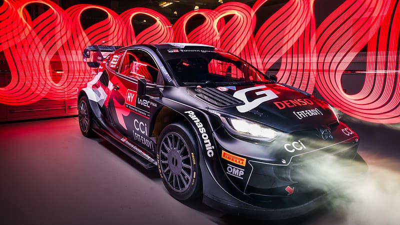
Edición Limitada: El GR Yaris no solo compite, redefine la ingeniería de los coches de calle inspirados en rally.
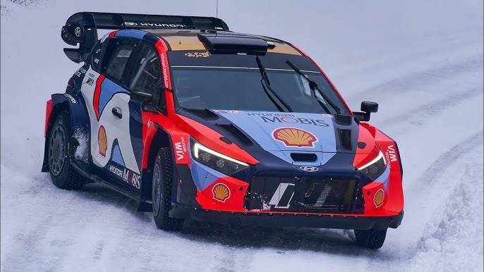
Hyundai Shell Mobis: El i20 N Rally1 es pura potencia coreana, diseñado para dominar sobre asfalto y tierra.
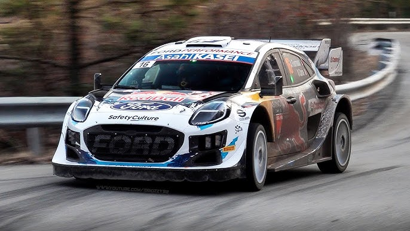
M-Sport Ford: El Puma Rally1 destaca por su agilidad y su icónica decoración Blue Oval en cada tramo.
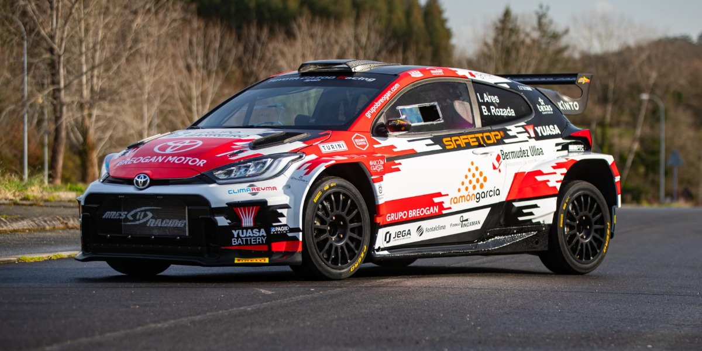
GR Yaris Rally2: El último en llegar. La ingeniería de Toyota aplicada a los equipos privados.
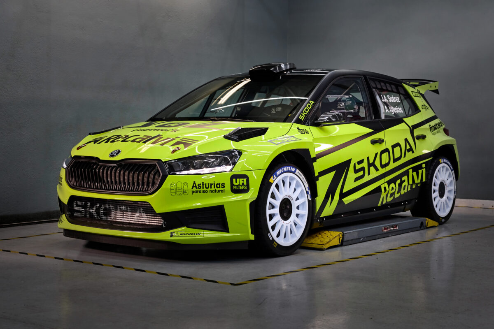
Skoda Fabia RS: El referente de la categoría Rally2. Fiabilidad y velocidad punta en cualquier superficie.
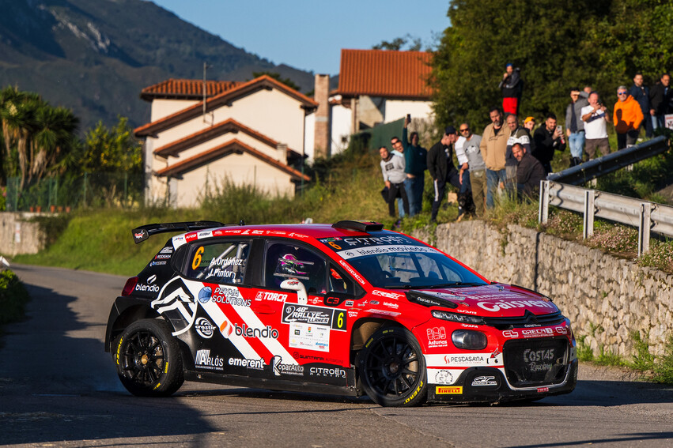
Citroën C3: Especialista en asfalto, un coche técnico y muy competitivo en el campeonato europeo.
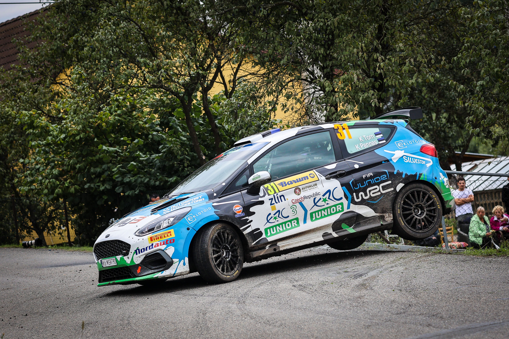
Ford Fiesta: El pionero de la categoría. Tracción total para dar el salto desde los fórmulas de iniciación.
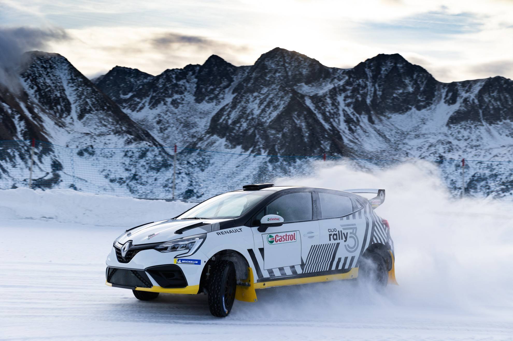
Renault Clio: Eficiencia francesa. Un coche equilibrado para pilotos que buscan su primer 4x4.
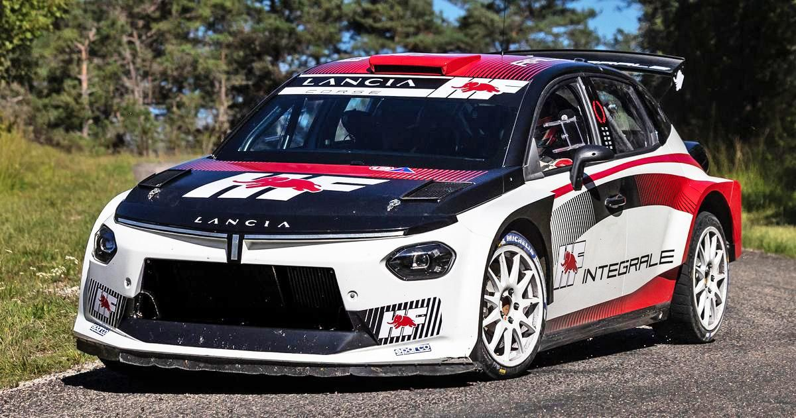
Lancia Ypsilon: El regreso de la leyenda italiana. Un Rally3 diseñado para dominar la tracción total de acceso.
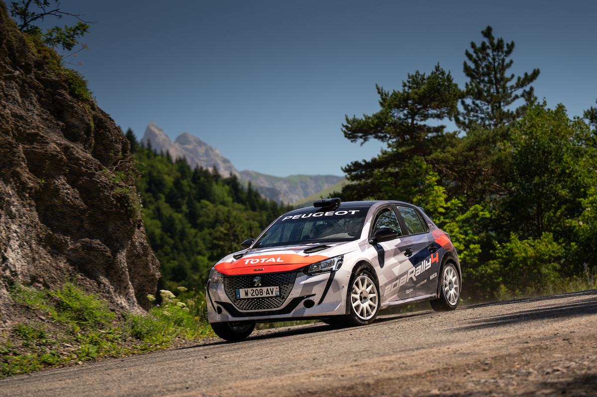
Peugeot 208: El rey de las copas de promoción. Ligero, nervioso y extremadamente divertido de ver.
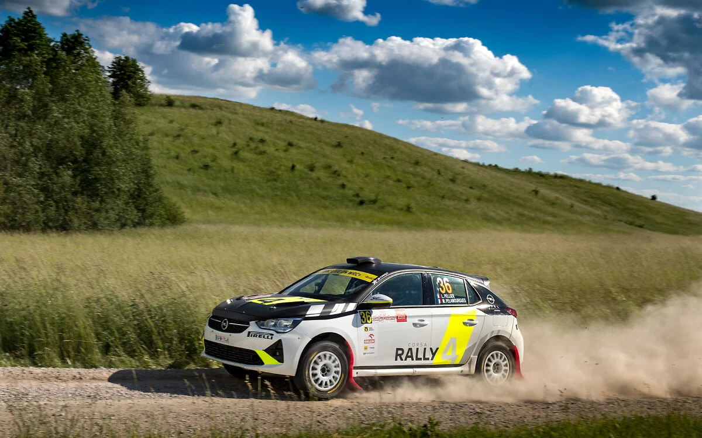
Opel Corsa: Comparte ADN con el 208 pero con una puesta a punto alemana más estable.
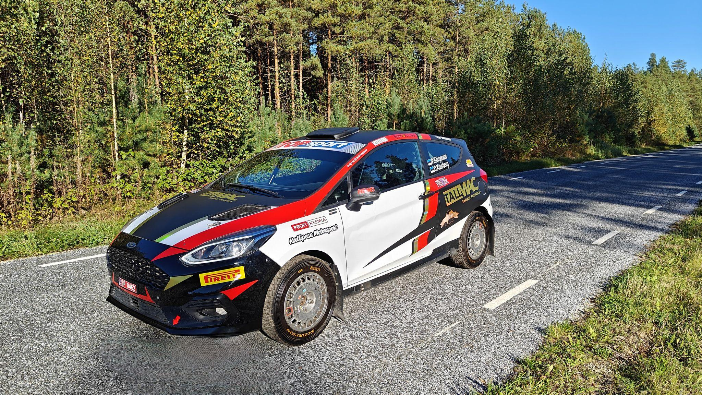
Fiesta R4: Con motor Ecoboost de 3 cilindros. El sonido más característico de los tramos.